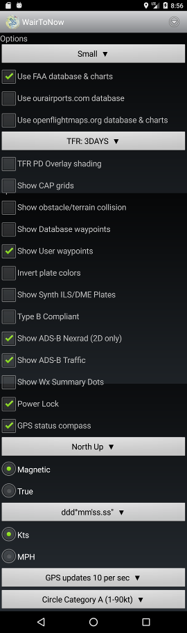

|  |
- Small - selects font sized used for most WairToNow text.
Making a change will restart the app.
- Use FAA database & charts - enables FAA databases and charts
(offical authoritative source for USA)
- Use ourairports.com database - enables
ourairports.com database
(unofficial non-authoritative open source for whole world)
- Use openflightmaps.org database & charts - enables
openflightmaps.org database
and charts (unofficial non-authoritative open source for parts of
Europe)
- TFR: ALL - selects which TFRs are displayed on the
currently selected chart.
- TFR PD Overlay shading - enables PorterDuff Overlay mode
for TFR area shading. Looks a little sharper on devices that
support it. Shows solid orange/red over TFR area if device does
not support it. Use whichever looks best on your device.
- Show CAP grids - will draw CAP grid identifiers
and numbers on the currently selected
chart. Only valid
for the continental US, does not do Alaska or Hawaii.
- Show obstacle/terrain collision - will highlight
potential obstacle/terrain collisions based on current
position, speed and heading. Will highlight locations
within 10 sec to 2 mins at current speed and within 30°
of current heading. The highlights will be depicted as
blinking red dots in the area of the collision hazard.
Requires that the topography
and obstructions databases be downloaded and current.
- Show database waypoints - will draw a dot and the
name of all known database waypoints on the currently
selected chart.
Usually very crowded with fix names.
- Show User waypoints - will draw a dot and the
name of all user waypoints on the currently
selected chart.
- Invert plate colors - uses white text on black background for
plates (such as airport diagram and instrument approach procedures).
- Show Synth ILS/DME plates - enables selection of synthetic
ILS/DME instrument approach procedure plates along with the official
FAA plates for airports.
- Type B Compliant - dumbs WairToNow down to be
AC 120-76C
Type B compliant. Basically disables any geo-referencing
except on airport/runway diagrams. Disables the Crumbs,
Glass, Route Track, VirtNav buttons, as well as IAP DME function.
- Show ADS-B Nexrad - display weather information on charts
received from ADSB. An ADSB receiver must be connected on the
sensors page.
- Show ADS-B Traffic - display traffic information on charts
received from ADSB. An ADSB receiver must be connected on the
sensors page.
- Show Wx Summary Dots - display colored dot over airports indicating
ceiling at that location as given by METAR. METARs are retrieved from
Internet when available or ADS-B when available. Only the latest METARs
less than 90 minutes old will be used.
- ceiling less than 500 ft or visibility less than 1SM: MAGENTA
- otherwise, ceiling less than 1000 ft or visibility less than 3SM: RED
- otherwise, ceiling less than 3000 ft or visibility less than 5SM: GRAY
- otherwise, ceiling less than 10,000 ft: GREEN
- otherwise: CYAN
- Power Lock - keeps the screen powered up when
the chart or
glass pages are
being displayed or an approach plate is being
displayed. Use with caution as it can wear the
battery down.
- GPS status compass - enable compass on the
sensors page.
- North Up - selects what direction is UP on the display
- Magnetic or True - select how to display
a heading.
- ddd° ... - select how to display a
latitude/longitude value.
- Kts or MPH - select speed units
- GPS updates 3 per sec - selects rate of GPS updates. depends on
capability of the actual GPS receiver. the higher rates use more battery.
- Circle Category A - indicates circling category for instrument
approach plates depiction of circling area
|